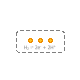
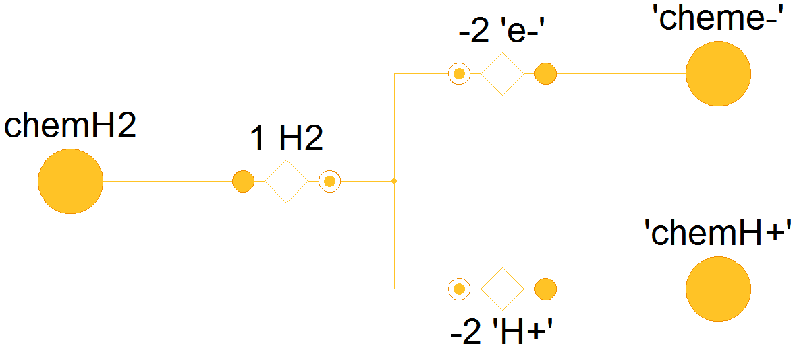
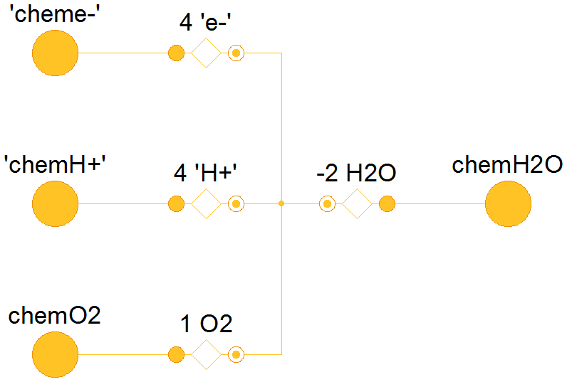
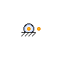

Table of Contents
- User's Guide
- Blocks
- Conditions
- Assemblies
- Regions
- Subregions
- Phases
- Species
- Chemistry
- Connectors
- Characteristics
- Units
- Quantities
- Utilities
- Icons
Download
- Latest version (**Empty; please check back soon or contact kdavies4 at gmail.com.)
FCSys.Chemistry
Models associated with chemical reactionsInformation
Extends from Icons.ChemistryPackage (Icon for packages containing chemical models).Package Content
| Name | Description |
|---|---|
| Examples | |
| Models associated with electrochemical reactions | |
| Hydrogen oxidation reaction | |
| Oxygen reduction reaction | |
| Surface tension | |
| SurfaceTensionContact | Surface tension, with contact angle |
 FCSys.Chemistry.HOR
Hydrogen oxidation reaction Information
| H2 ⇌ 2e- + 2H+ |
Parameters
| Type | Name | Default | Description |
|---|---|---|---|
| Integer | n_trans | Number of components of translational momentum |
Connectors
| Type | Name | Description |
|---|---|---|
| Chemical | 'conne-' | Connector for e- |
| Chemical | 'connH+' | Connector for H+ |
| Chemical | connH2 | Connector for H2 |
Modelica definition
model HOR "Hydrogen oxidation reaction" extends FCSys.Icons.Names.Top2; constant Integer n_trans(min=0, max=3) "Number of components of translational momentum"; // Note: This must be a constant rather than a parameter due to errors in // Dymola 2014. Conditions.Adapters.ChemicalReaction 'e-'( final n_trans=n_trans, m=Characteristics.'e-'.Gas.m, n=-2); Conditions.Adapters.ChemicalReaction 'H+'( final n_trans=n_trans, m=Characteristics.'H+'.Gas.m, n=-2); Conditions.Adapters.ChemicalReaction H2( final n_trans=n_trans, m=Characteristics.H2.Gas.m, n=1); Connectors.Chemical 'conne-'(redeclare final constant Integer n_trans=n_trans) "Connector for e-"; Connectors.Chemical 'connH+'(redeclare final constant Integer n_trans=n_trans) "Connector for H+"; Connectors.Chemical connH2(redeclare final constant Integer n_trans=n_trans) "Connector for H2"; // Note: These redeclarations are necessary due to errors in Dymola 2014. equation connect(connH2, H2.chemical); connect('e-'.chemical, 'conne-'); connect('H+'.chemical, 'connH+'); connect(H2.reaction, 'e-'.reaction); connect('H+'.reaction, H2.reaction); end HOR;
 FCSys.Chemistry.ORR
FCSys.Chemistry.ORR
Oxygen reduction reaction

Information
| 4e- + 4H+ + O2 ⇌ 2H2O |
Parameters
| Type | Name | Default | Description |
|---|---|---|---|
| Integer | n_trans | Number of components of translational momentum |
Connectors
| Type | Name | Description |
|---|---|---|
| Chemical | 'conne-' | Connector for e- |
| Chemical | 'connH+' | Connector for H+ |
| Chemical | connO2 | Connector for O2 |
| Chemical | connH2O | Connector for H2O |
Modelica definition
model ORR "Oxygen reduction reaction" extends FCSys.Icons.Names.Top2; constant Integer n_trans(min=0, max=3) "Number of components of translational momentum"; // Note: This must be a constant rather than a parameter due to errors in // Dymola 2014. Conditions.Adapters.ChemicalReaction 'e-'( final n_trans=n_trans, m=Characteristics.'e-'.Gas.m, n=4, reaction(Ndot(stateSelect=StateSelect.prefer))); Conditions.Adapters.ChemicalReaction 'H+'( final n_trans=n_trans, m=Characteristics.'H+'.Gas.m, n=4); Conditions.Adapters.ChemicalReaction O2( final n_trans=n_trans, m=Characteristics.O2.Gas.m, n=1); Conditions.Adapters.ChemicalReaction H2O( final n_trans=n_trans, m=Characteristics.H2O.Gas.m, n=-2); Connectors.Chemical 'conne-'(redeclare final constant Integer n_trans=n_trans) "Connector for e-"; Connectors.Chemical 'connH+'(redeclare final constant Integer n_trans=n_trans) "Connector for H+"; Connectors.Chemical connO2(redeclare final constant Integer n_trans=n_trans) "Connector for O2"; Connectors.Chemical connH2O(redeclare final constant Integer n_trans=n_trans) "Connector for H2O"; // Note: These redeclarations are necessary due to errors in Dymola 2014. equation connect('H+'.chemical, 'connH+'); connect('e-'.chemical, 'conne-'); connect(O2.chemical, connO2); connect(H2O.chemical, connH2O); connect('e-'.reaction, H2O.reaction); connect('H+'.reaction, H2O.reaction); connect(O2.reaction, H2O.reaction); end ORR;
FCSys.Chemistry.SurfaceTension
Surface tensionInformation
The characteristic radius (R) is the harmonic mean of the (2) principle radii of the liquid volume.
The default surface tension (γ = 0.0663 N/m) is for saturated water at 60 °C, interpolated from [Incropera2002, pp. 924]. Note that the surface tension in [Wang2001] is incorrect (likely unit conversion error).
Assumptions:
- The fluid is incompressible and isothermal across the surface layer.
-
Extends from FCSys.Icons.Names.Top2.
Parameters
Type Name Default Description Geometry Integer n_trans Number of components of translational momentum LengthReciprocal overR 1/U.mm Reciprocal of characteristic radius [1/L] Material properties VolumeSpecific v_w Characteristics.H2O.Liquid.v… Specific volume of the wetting phase [L3/N] SurfaceTension gamma 0.0663*U.N/U.m Surface tension [M/T2] Connectors
Type Name Description Chemical wetting Chemical interface to the wetting phase Chemical nonwetting Chemical interface to the nonwetting phase Modelica definition
model SurfaceTension "Surface tension" extends FCSys.Icons.Names.Top2; // Geometric parameters constant Integer n_trans(min=0, max=3) "Number of components of translational momentum"; // Note: This must be a constant rather than a parameter due to errors in // Dymola 2014. Q.LengthReciprocal overR=1/U.mm "Reciprocal of characteristic radius"; // Material properties parameter Q.VolumeSpecific v_w=Characteristics.H2O.Liquid.v_Tp() "Specific volume of the wetting phase"; parameter Q.SurfaceTension gamma=0.0663*U.N/U.m "Surface tension"; // Aliases Q.Pressure Deltap "Capillary pressure"; // Auxiliary variables (for analysis only) output Q.Potential Deltag=wetting.g - nonwetting.g if environment.analysis "Potential of wetting phase w.r.t. nonwetting phase"; Connectors.Chemical wetting(final n_trans=n_trans) "Chemical interface to the wetting phase"; Connectors.Chemical nonwetting(final n_trans=n_trans) "Chemical interface to the nonwetting phase"; protected outer Conditions.Environment environment "Environmental conditions"; equation // Aliases Deltap = 2*gamma*overR "Young-Laplace equation"; // Streams wetting.phi = inStream(nonwetting.phi[:]); nonwetting.phi = inStream(wetting.phi[:]); wetting.sT = inStream(nonwetting.sT); nonwetting.sT = inStream(wetting.sT); // Potentials nonwetting.g = wetting.g + v_w*Deltap "Kelvin equation (see assumption #1)"; // Conservation (without storage) 0 = wetting.Ndot + nonwetting.Ndot "Material"; end SurfaceTension;
 FCSys.Chemistry.SurfaceTensionContact
Surface tension, with contact angleInformation
**Note modified Leverett correlationThe default permeability (κ = 6.46×10-5 mm2) is based on the air permeability of SGL Carbon Group Sigracet® 10 BA [SGL2007]. Wang et al. use κ = 10-5 mm2 [Wang2001].
The default contact angle (θ = 140°) is typical of the GDL measurments listed at http://www.chem.mtu.edu/cnlm/research/Movement_of_Water-in_Fuel_Cell_Electrodes.htm (accessed Nov. 22, 2103).
Extends from SurfaceTension (Surface tension).Parameters
Type Name Default Description Geometry Integer n_trans Number of components of translational momentum LengthReciprocal overR cos(theta)/(2*sqrt(kappa)) Reciprocal of characteristic radius [1/L] Volume V U.cc Total volume [L3] Volume V_w U.cc Volume of the wetting phase [L3] Material properties VolumeSpecific v_w Characteristics.H2O.Liquid.v… Specific volume of the wetting phase [L3/N] SurfaceTension gamma 0.0663*U.N/U.m Surface tension [M/T2] Angle theta 140*U.degree Contact angle [A] Area kappa 6.46e-5*U.mm^2 Permeability [L2] replaceable function J FCSys.Characteristics.H2O.J Leverett J function Connectors
Type Name Description Chemical wetting Chemical interface to the wetting phase Chemical nonwetting Chemical interface to the nonwetting phase Material properties replaceable function J Leverett J function Modelica definition
model SurfaceTensionContact "Surface tension, with contact angle" extends SurfaceTension(final overR=cos(theta)/(2*sqrt(kappa))); // ** *J(V_w/V) // Geometry parameter Q.Volume V=U.cc "Total volume"; Q.Volume V_w=U.cc "Volume of the wetting phase"; // Material properties parameter Q.Angle theta=140*U.degree "Contact angle"; parameter Q.Area kappa=6.46e-5*U.mm^2 "Permeability"; replaceable function J = FCSys.Characteristics.H2O.J "Leverett J function"; end SurfaceTensionContact;